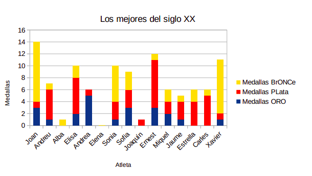

\vfill
\begin{center} \includegraphics[height=32pt]{../../../assets/llicencia.png} \end{center}
\begin{center} \footnotesize{ \textit{Apunts Aplicacions Ofimàtiques - 1SMX} by \href{https://github.com/abeneto}{Alberto Benetó} is licensed under \href{https://creativecommons.org/licenses/by-nc-sa/4.0/?ref=chooser-v1}{Creative Commons Attribution-NonCommercial-ShareAlike 4.0} } \end{center}
\newpage
1. Introducció
La pràctica introdueix l'ús bàsic de LibreOffice.
2. Objectius
L'objectiu d'aquesta pràctica és comprovar si l’alumnat ha assimilat els següents conceptes pràctics i sap com aplicar-los: - Gràfics estadístics - Creació de taules - Formatació de taules - Conversió de text a taula
3. Pràctica
3.1. Recreació de taula
Reprodueix la següent taula:
| NOMBRE | MEDALLAS ORO | MEDALLAS PLATA | MEDALLAS BRONCE |
|---|---|---|---|
| Joan | 3 | 1 | 10 |
| Andreu | 1 | 5 | 1 |
| Alba | 0 | 0 | 1 |
| Elisa | 2 | 6 | 2 |
| Andrea | 5 | 1 | 0 |
| Elena | 0 | 0 | 0 |
| Sonia | 1 | 3 | 6 |
| Sofia | 3 | 3 | 3 |
| Joaquín | 0 | 1 | 0 |
| Ernest | 3 | 8 | 1 |
| Miquel | 2 | 2 | 2 |
| Jaume | 1 | 3 | 1 |
| Estrella | 0 | 4 | 2 |
| Carles | 0 | 5 | 1 |
| Xavier | 1 | 1 | 9 |
I aplica estils per a que quede el més semblant possible a aquesta:
\newpage
3.2. Generació de gràfic
Crea un gràfic amb les dades de la taula anterior i afegeix-lo just sota la taula.

\newpage
3.3. Creació de nova taula
Baix del gràfic, crea una taula amb les següents especificacions: - Taula de 25 files i 4 columnes - Repetició de les files de títol en noves pàgines - Estil de taula: Finanzas - Introdueix les següents dades:
| Fecha | Bitcoin | Ethereum | Doge |
|---|---|---|---|
| 22.09.2021 | 43.023,7 | 2.984,32 | 0,213940 |
| 21.09.2021 | 40.651,3 | 2.761,52 | 0,200575 |
| 20.09.2021 | 42.870,6 | 2.976,05 | 0,207600 |
| 19.09.2021 | 47.238,7 | 3.329,12 | 0,232971 |
| 18.09.2021 | 48.306,7 | 3.435,97 | 0,241378 |
| 17.09.2021 | 47.282,8 | 3.398,65 | 0,239833 |
| 16.09.2021 | 47.748,0 | 3.569,43 | 0,242142 |
| 15.09.2021 | 48.130,6 | 3.611,90 | 0,247400 |
| 14.09.2021 | 47.077,5 | 3.428,87 | 0,240342 |
| 13.09.2021 | 44.949,5 | 3.284,52 | 0,235823 |
| 12.09.2021 | 46.062,3 | 3.408,28 | 0,250623 |
| 11.09.2021 | 45.161,9 | 3.267,33 | 0,240969 |
| 10.09.2021 | 44.842,8 | 3.207,27 | 0,239565 |
| 09.09.2021 | 46.385,6 | 3.423,51 | 0,252357 |
| 08.09.2021 | 46.061,4 | 3.495,10 | 0,256726 |
| 07.09.2021 | 46.779,6 | 3.423,12 | 0,254302 |
| 06.09.2021 | 52.672,1 | 3.927,21 | 0,309001 |
| 05.09.2021 | 51.768,6 | 3.950,62 | 0,314393 |
| 04.09.2021 | 49.918,4 | 3.884,97 | 0,299222 |
| 03.09.2021 | 49.999,0 | 3.936,29 | 0,296052 |
| 02.09.2021 | 49.274,3 | 3.786,19 | 0,294913 |
| 01.09.2021 | 48.819,4 | 3.832,73 | 0,294338 |
| 31.08.2021 | 47.130,4 | 3.430,74 | 0,278231 |
| 30.08.2021 | 46.992,7 | 3.225,67 | 0,271949 |
| 29.08.2021 | 48.777,4 | 3.222,16 | 0,266967 |
3.4. Partició de la taula
Mou la taula cap avall suficient per dividir-la entre dues pàgines.
3.5. Gràfics per cada moneda
Genera un gràfic per a cadascuna de les monedes (Bitcoin, Ethereum, Doge) que mostri l'evolució del seu preu al llarg del temps.
3.6. Conversió de text a taula
Converteix el text situat en el fitxer litecoin.odt a una taula com les anteriors i genera un gràfic per aquesta.
3.7. Documentació del procés
Baix del gràfic, descriu els passos seguits per convertir el text en una taula.
3.8. Afegir noves files
Afegeix 3 files noves a cadascuna de les taules de Bitcoin, Ethereum, Doge i Litecoin amb dates i preus ficticis.
3.9. Eliminació de files
Elimina les 3 primeres files de cadascuna de les taules.
3.10. Formatació de les taules
Aplica el següent format a les taules de Bitcoin, Ethereum, Doge i Litecoin: - Els títols de la primera fila en negreta, 18pt, Arial. - Vores exteriors de 2 pts i interiors per defecte. - Efecte "pijama": files imparells en blanc i files parells en gris clar 4. - Ample de la darrera columna: 5 cm, la resta 3 cm. - Centra les taules a la pàgina.
3.11. Taula addicional
Crea la taula següent combinant cel·les, files i columnes segons sigui necessari, i afegeix-la al final del document.
4. Guarda el document
Guarda el document amb el nom practica3.odt, exporta'l també com practica3.pdf i puja els documents a la plataforma.